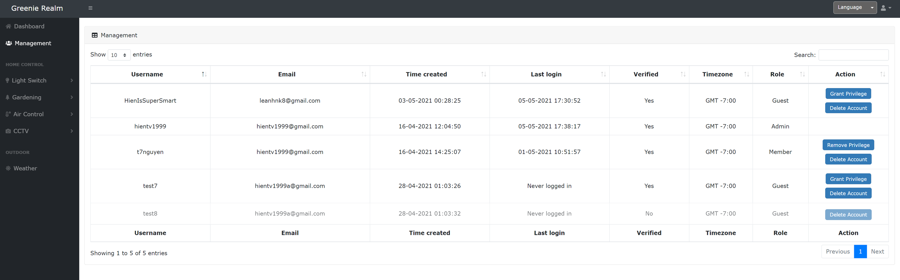
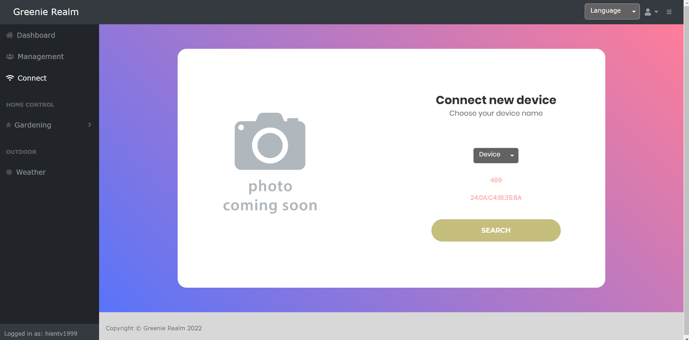
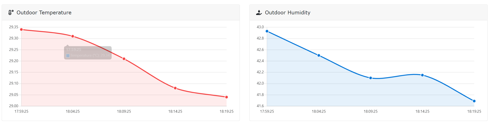
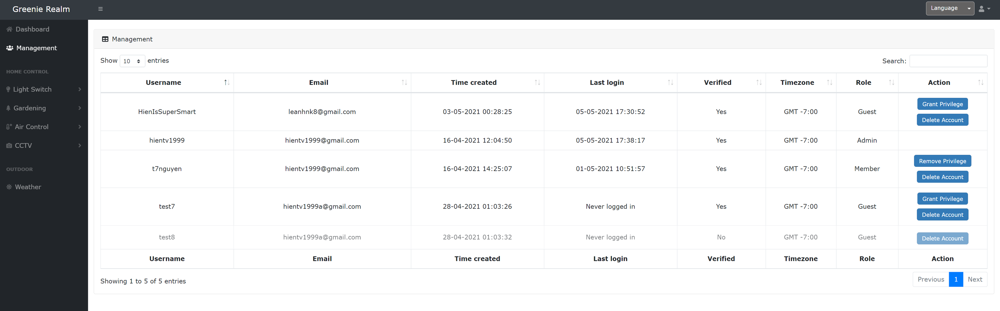
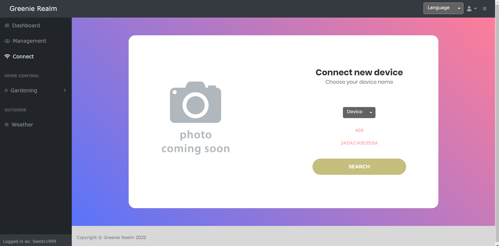
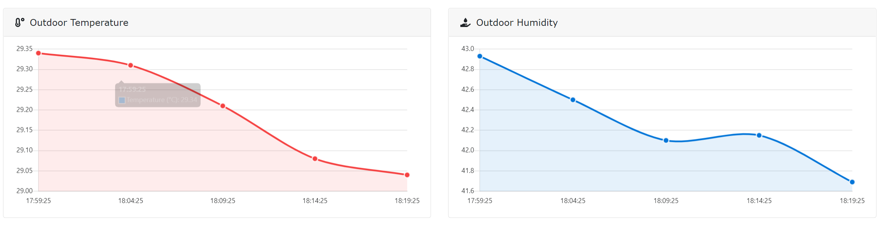

Agrismart
 





Project information
- Hardware: Raspberry Pi 4B, ESP32, SSD1306, LiFePO4, USB-C, VL6180X, AHT10, water pump, capacitive soil sensor, capacitive touch, buzzer/speaker, solar panel
- Firmware/Software: C++, WiFi, BLE, HTML, CSS, JS, AJAX, JSON, GitHub, Python, Platform IO
- Project Duration: October, 2021 - September, 2022
- Project URL: AGRISMART , Greenie Realm
The initial purpose of this project was to pack all of my previous skills gaining from the Dr.ESP32 and Smart-clock-thermometer-hygrometer projects. Agrismart serves as a controller hub to monitor the soil moisture, temperature and humidity of an area of garden and control the water pump to water the plants. It is battery-powered and can be charged via solar panel and USB-C cable. Agrismart stays in deepsleep to preserve power, and wakes up every hour to update the sensor data to a LAMP server via WiFi hosted on a Raspberry Pi 4B, named Greenie Realm. BLE serves as a means to configure the WiFi credential, name, location, for the device either from smartphone or Greenie Realm. The PCB has been revised through 3 versions until it is terminated for the upcoming Agris project.